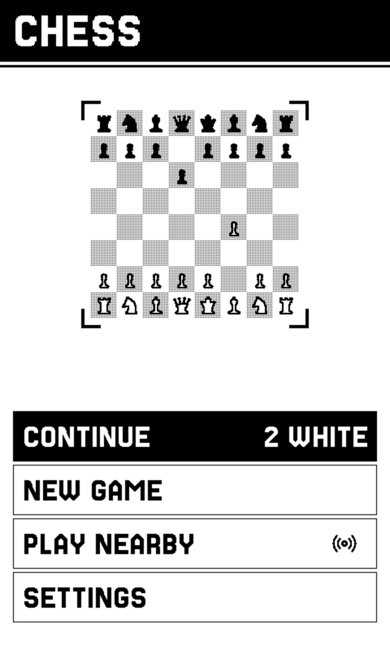
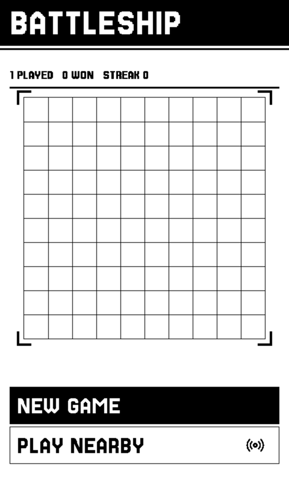

Chess
A full engine on the device, or a board between two of them. Pick up exactly where the position was left.
A fork of CrossPoint · Xteink X4 Pro
Crossplay treats the device as something you do things on, not only something you read on. Eight games and three apps built for a screen that waits, and two devices that play together with nothing to set up.

What e-ink is actually good at
E-ink suits books because a page sits there at no power for as long as you need it. The screen is still for almost the entire activity, and the interesting part happens in your head.
That is not a description of reading. It is a description of a whole class of things. A chess position. A flashcard you are trying to recall. A logic grid, a nonogram, a hand of cards you are counting. In every one the screen presents a situation, you think, and then you decide.
A device that cannot animate is not a compromised games console. For this kind of game it is the right one, and the property that makes it right had been spent entirely on books.

Not a folder of minigames
Every app shares a shelf, a header band, a typeface and a control vocabulary. They are built on one UI layer with one interaction model, so the thing you learn in Chess is the thing that works in Jaipur. That shared surface is what makes eleven programs feel like one device rather than eleven downloads.
A full engine on the device, or a board between two of them. Pick up exactly where the position was left.

The daily word grid, set in a serif of its own, with an archive of eleven hundred past boards for when today's is done.

A nonogram whose clues are a dungeon. Sixty-four of them, plus a tutorial that is a lesson rather than a level.

A logic grid where every clue is a single predicate, and every case is built through the solver rather than checked against it. It is always fair.

The two-player trading game, against a device that cannot cheat by construction, or against someone sitting opposite you.

Lay out a fleet, then hunt someone else's. The first game built on the link layer, and the reason it exists.

A party game for up to eight people and a single device that goes round the table. No second device needed, and no phones.

Klondike, turned sideways because that is the shape of a tableau. Your last sixteen deals are drawn from your own record.
Anki decks with the FSRS scheduler, offline. Three hundred cards and a review history that lives on the card, not in a cloud.

The front page in a reading serif, with articles pulled down and kept on the card so a saved one is still there with the radio off.

The whole archive, packed for the card and drawn at one to one. A comic is line art, which is exactly what this panel is best at.

Untouched. Crossplay adds a shelf beside it and never gets in its way, and every CrossPoint release lands here within the week.
Two devices, one table
Put two of them next to each other and they find one another. There is no pairing screen, no room code, no account, no router and no internet. The entire surface of it is one row on a menu.
The measure for this was the DS: you sat down next to someone and it worked, and nothing about the experience ever mentioned a network. If a person ever has to know how it connects, it is a bug.
Chess, Jaipur and Battleship use it today. It is a layer rather than a feature, so the next game gets it for free.


Built on, not against
Crossplay is a fork of CrossPoint and tracks it continuously, which means the reading only ever gets better without anyone here touching it. The forks are not competitors so much as different answers to what the hardware is for.
| Project | What it is aiming at | Relationship |
|---|---|---|
| FreeInk | The SDK and the open hardware under all of it. One firmware API, many e-paper devices. | The floor Crossplay stands on. |
| CrossPoint | The best open e-reader for these devices. Typography, sync, fonts, thirty languages. | The base. Merged in weekly. |
| CrossMux | CrossPoint reading, refined for CJK, with a first-class Simplified Chinese build. | A sibling fork, aimed at readers. |
| Crossplay | The same device as somewhere to spend a still half-hour. Games, study, comics, and two devices that play together. | This one. X4 Pro only. |
Open firmware
There is no store between you and the device, no review, no account and no subscription. It is a binary you flash and source you can read. If you want a twelfth app, the shelf takes one file.
Crossplay targets the Xteink X4 Pro specifically. For every other supported device, CrossPoint upstream is the right answer and is excellent.